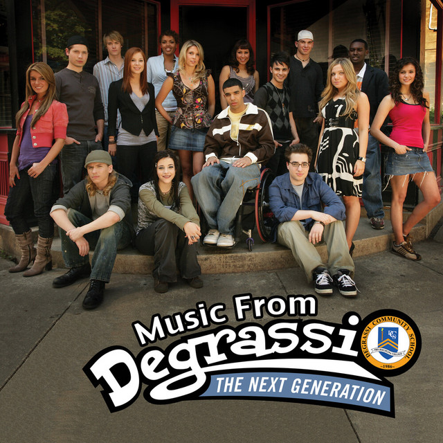
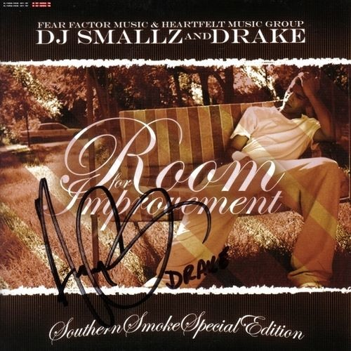
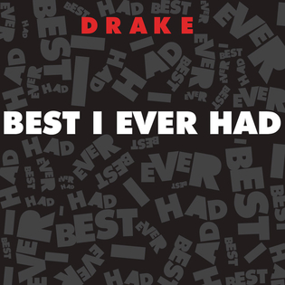
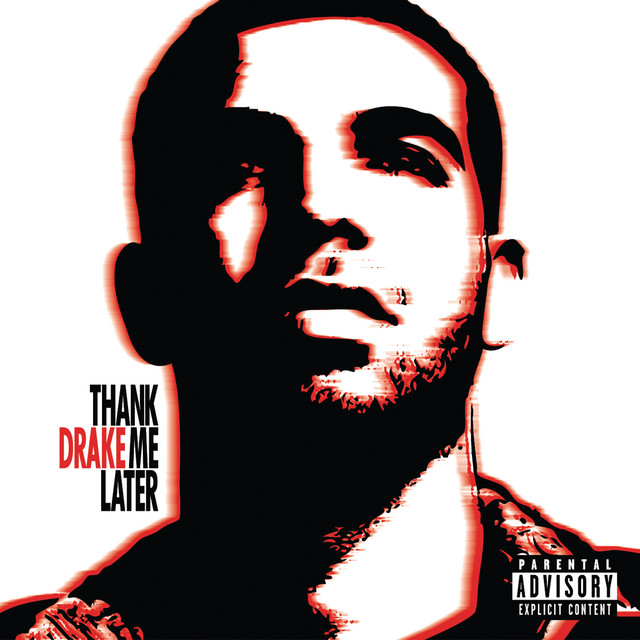
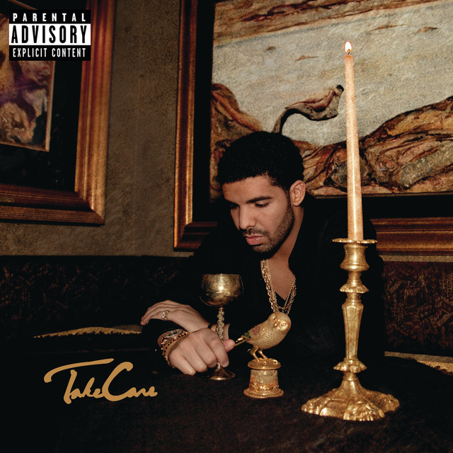
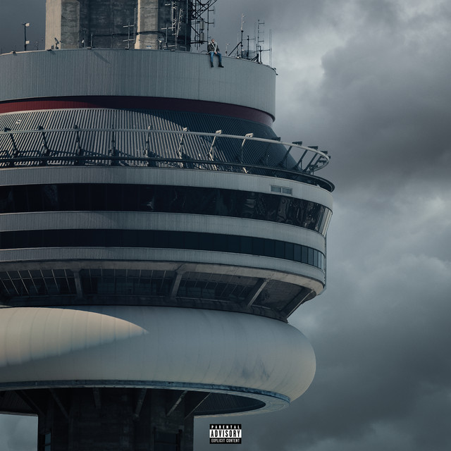
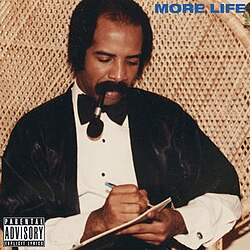
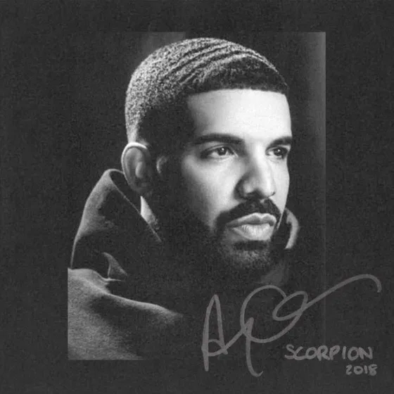
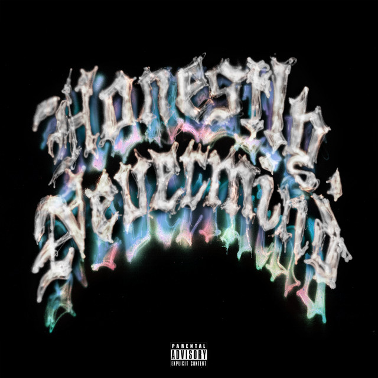

2009
Bekend van de serie Degrassi: The Next Generation.

Nog geen grote muziekcarrière.
2006-2009
Eerste stappen in muziek

Met mixtapes zoals Room for Improvement begon hij zijn carrière als rapper. Hij was nog relatief onbekend en bouwde langzaam een fanbase op.
2009
Grote doorbraak

De mixtape So Far Gone betekende zijn echte doorbraak. Hits zoals Best I Ever Had maakten hem wereldwijd bekend.
2010
Eerste studioalbum

Met Thank Me Later bevestigde hij zijn succes. Het album was commercieel sterk en zette hem definitief op de kaart.
2011-2012
Emotionele en persoonlijke stijl

Op Take Care liet Drake meer gevoel zien. Hij combineerde rap en zang en sprak over relaties en emoties.
2013-2014
Zelfverzekerde artiest

Met Nothing Was the Same werd zijn stijl sterker en zelfverzekerder. Hij klonk volwassener en consistenter.
2015-2016
Internationale invloeden

Het album Views bevatte invloeden van dancehall en Afrobeat. Hij werd een echte wereldster.
2017
Experimenteren met stijlen

Met More Life bracht hij een “playlist” uit met verschillende internationale sounds en samenwerkingen.
2018-2019
Dubbele identiteit

Het dubbelalbum Scorpion toont zowel zijn rapkant als zijn zang/R&B-kant.
2020-2021
Terug naar de kern

Met Certified Lover Boy keerde hij terug naar meer rap en persoonlijke onderwerpen.
2022
Nieuwe muzikale richting

Op Honestly, Nevermind experimenteerde hij met house- en dancemuziek.
2023-heden
Blijven vernieuwen
Drake blijft nieuwe stijlen verkennen en inspelen op trends, terwijl hij zijn dominante positie in de muziekwereld behoudt.